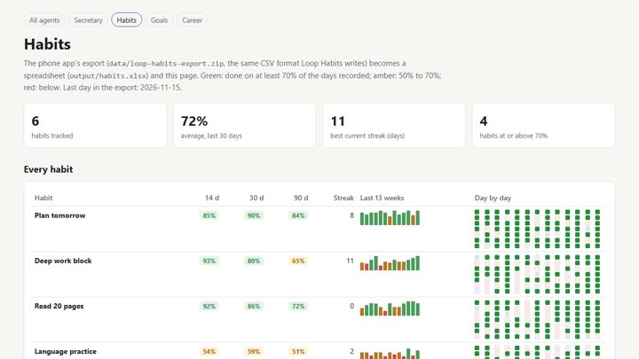
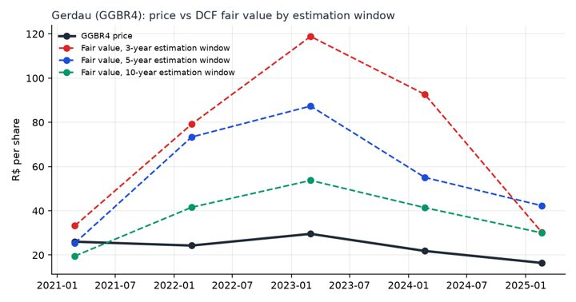
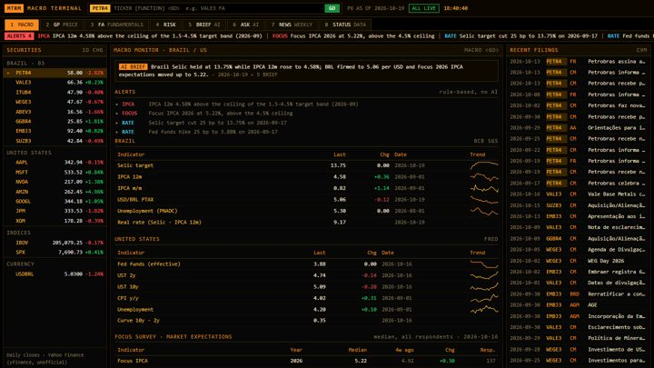
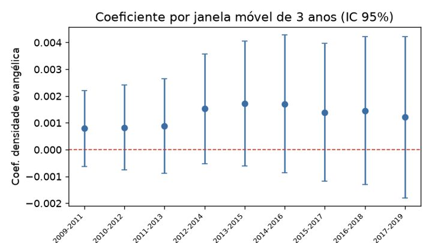

Economia na UFRJ · finanças, valuation e automação com IA · Rio de JaneiroEconomics at UFRJ · finance, valuation and AI automation · Rio de Janeiro
Gosto de pegar trabalho analítico repetitivo e transformar em fluxo automático que dá para conferir: agentes de IA
que só gravam depois de uma checagem, programas que usam a IA para ler e analisar dados, e análises com dados públicos
que se refazem com um comando. Os projetos abaixo rodam sem chave da API, em modo demonstração.What I enjoy most is taking repetitive analytical work and turning it into automated workflows I can trust and check: AI agents that only write after passing a review, programs that use AI to read and analyse data, and analyses of public data that rebuild with a single command. Every project below runs without an API key, in demo mode.
Os repositórios são novos, mas os projetos não: em outubro de 2026 publiquei versões públicas de trabalhos que desenvolvo há alguns anos. O mais antigo é o sistema de agentes pessoais, que integra vários apps do meu dia a dia; o modelo de terrenos e o terminal vêm de 2025.The repositories are new; the projects are not. In October 2026 I published public versions of work I have been developing for several years. The oldest is my personal agent system, which connects several apps I use every day; the land-deals model and the terminal date from 2025.
Uso o Claude (Claude Code e a API) como ferramenta nas partes técnicas: código, revisão e documentação. A pergunta, as escolhas de modelo, a validação e as conclusões são minhas.I use Claude (Claude Code and the API) as a tool for the technical work: code, review and documentation. The questions, modelling choices, validation and conclusions are my own.
Projetos principaisMain projects

recorte de sistema privadoexcerpt from a private system
Agentes no Claude Code que cuidam da minha agenda, dos meus estudos, dos hábitos e da carreira. Nenhum deles mexe nos meus dados sem passar por uma checagem e sem a minha aprovação.Agents built in Claude Code that manage my calendar, studies, habits and job search. None of them can change my data without passing a check and getting my approval.
- Uma trava automática impede o agente de gravar na agenda antes de o plano ser conferidoAn automatic gate blocks any write to my calendar until the plan has been checked
- Partes em Python chamam a IA direto, com resposta em formato fixo: triagem semanal de vagas e testes automáticos dos próprios agentesPython components call the AI directly and require answers in a fixed format: weekly job screening and automated tests of the agents themselves
- Aqui está um recorte com dados fictícios; uso o sistema completo com os meus dados reaisThis repository is an excerpt with fictitious data; I run the full system on my own data
PythonClaude CodeAPI do ClaudeClaude API

dados públicospublic data
Meu TCC é um valuation da Gerdau por fluxo de caixa descontado, em cinco datas do ciclo do aço. O modelo é meu; em volta dele montei quatro revisões feitas com IA.My undergraduate thesis values the steelmaker Gerdau using discounted cash flow at five points in the steel cycle. The model is my own; around it I built four AI-powered reviews.
- Confere os números da minha planilha nos relatórios da empresa, citando a páginaChecks every figure in my spreadsheet against the company's reports, citing the page
- Refaz as contas do zero a partir dos dados públicos da CVM e aponta onde divergeRebuilds the numbers from scratch from public filings and shows where they differ
- Testa especificações alternativas e prepara as perguntas que a banca pode fazerTests alternative specifications and prepares the questions the thesis committee is likely to ask
Relatório final (PDF)Final report (PDF)
Dados e notebook do TCC:Thesis data and notebook: tcc-valuation-gerdau
valuationPythonAPI do ClaudeClaude API

dados públicospublic data
Um terminal no estilo Bloomberg, só com dado público: juros, inflação, câmbio e atividade do Brasil e dos EUA, ações, balanços e comunicados de empresas.A Bloomberg-style terminal built only on public data: rates, inflation, FX and activity in Brazil and the US, stocks, financial statements and company filings.
- Os dados são baixados e conferidos sozinhos e a página se atualiza pelo GitHubData is downloaded and validated automatically, and the page refreshes itself through GitHub
- A IA escreve um resumo da semana e responde perguntas sobre os dados; o código confere cada número que ela citaThe AI writes a weekly summary and answers questions about the data; the code checks every number it quotes
- Página: gcabralcavalcanti.github.io/macro-terminal
PythonAPI do ClaudeClaude APIdados públicospublic data

dados públicospublic data
Quatro estudos curtos em Python. Três vêm da minha parte de trabalhos de econometria da graduação (os textos completos, mais longos, envio se pedirem); o quarto, sobre escolha de fundos, usa dados públicos da CVM.Four short empirical studies in Python. Three are based on my share of university econometrics coursework (the full papers are available on request); the fourth, on selecting investment funds, uses public data from Brazil's securities regulator (CVM).
- Curva de Phillips no Brasil, crime e punição em painel, religião e violência doméstica registrada, e fundos de varejoThe Phillips curve in Brazil, crime and deterrence (panel data), religion and reported domestic violence, and retail funds
- Cada estudo baixa os dados, confere a base antes de estimar e explica por que cada modelo mudouEach study pulls its own data, validates it before estimation and explains every change of specification
- O texto dos relatórios é gerado automaticamente; o que importa é a parte quantitativaThe report text is generated automatically; the substance is the quantitative work
Relatórios (PDF)Reports (PDF)
econometriaeconometricsPythondados públicospublic data